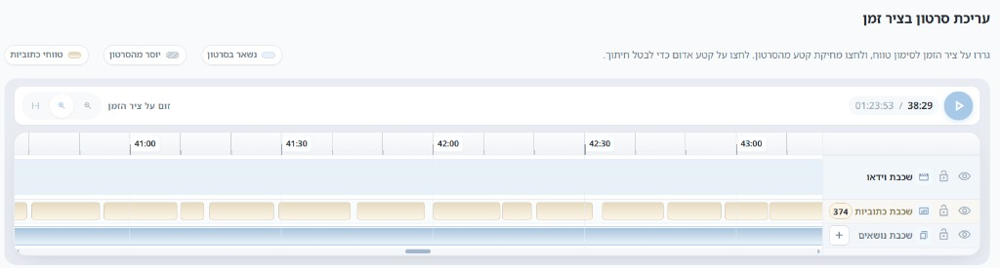
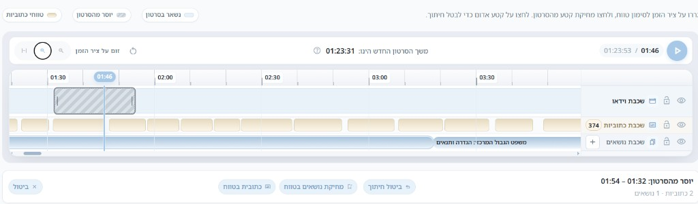
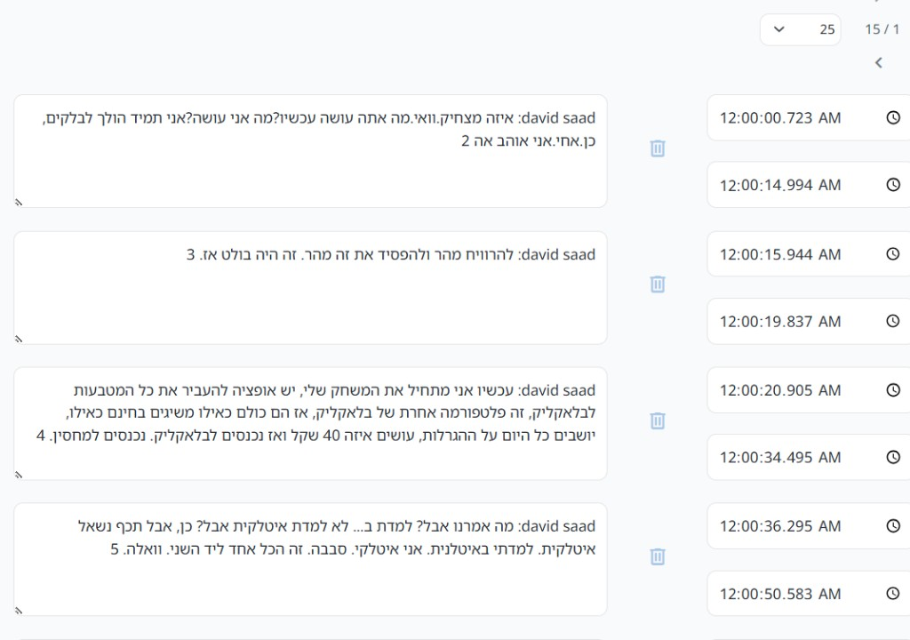
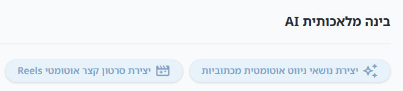

¿Qué es el recorte de un solo vídeo?
En lugar de crear un vídeo nuevo a partir de segmentos de distintas fuentes (mediante el Estudio), puede editar un vídeo existente: marcar segmentos para eliminar, y el sistema generará un vídeo nuevo que contiene solo lo que queda.
El vídeo original permanece sin cambios. La versión recortada es un registro separado en el sistema (título del tipo Trimmed - … o similar).
¿Cuándo está disponible esta área?
- El vídeo está en estado listo (no en procesamiento).
- Medios locales / subidos — no un vídeo externo exclusivamente de YouTube.
- Tiene permiso de edición sobre el vídeo (propietario, administrador o gestor de contenido).
Si el área no aparece, compruebe el estado del vídeo o el tipo de medio.
Acceso al editor de recorte
- Acceda a la gestión de vídeos desde el menú.
- Encuentre el vídeo y pulse Editar.
- En la página de configuración del vídeo, desplácese hasta edición de vídeo en línea de tiempo (debajo del reproductor, encima de «Detalles generales»).
¿Cómo funciona el recorte?
El enfoque es «qué eliminar»: marca segmentos para eliminar, y todo lo demás permanece en la nueva versión.
Puede eliminar varios segmentos del mismo vídeo — por ejemplo, una breve introducción y un tramo en medio de la clase.
Componentes de la interfaz
- Reproductor — reproducción/pausa y tiempo actual (tiempo actual / duración total).
- Línea de tiempo — tres capas: vídeo, subtítulos (si existen), temas de navegación.
- Zoom de la línea de tiempo — acercar, alejar y ajustar al ancho de la pantalla.
- Duración del vídeo nuevo — se actualiza tras marcar al menos un segmento para eliminar.
- Restablecer recortes — elimina todos los marcadores de eliminación de una vez.

Marcar un segmento para eliminar
- En la línea de tiempo, arrastre sobre el rango de tiempo que desea eliminar.
- Aparece una barra de selección con tiempos de inicio y fin, y un resumen de cuántos subtítulos y temas caen en el rango.
- Pulse Eliminar segmento del vídeo — el segmento se marca como «se eliminará del vídeo» (fondo rayado en todas las capas).
- Repita la operación para cada segmento adicional que deba eliminar.
Atajos de teclado (cuando el foco no está en un campo de texto): Delete o Backspace eliminan el rango seleccionado.

Cancelar o modificar un recorte
- Al hacer clic en un segmento marcado para eliminar en la línea de tiempo — se selecciona; entonces puede cancelar recorte.
- Puede arrastrar los extremos del segmento marcado para cambiar los límites de eliminación.
- Restablecer recortes — elimina todos los marcadores (antes de crear el vídeo nuevo).
Acciones adicionales en la línea de tiempo
En el mismo editor, sin crear un vídeo nuevo:
- Temas de navegación — añadir, editar o eliminar capítulos (clic en la capa de temas o «+»).
- Subtítulo en el rango — añadir un subtítulo nuevo en el rango seleccionado (cuando los subtítulos están listos).
- Eliminar temas en el rango — elimina los capítulos que caen dentro de la selección.
Estas acciones se guardan con Guardar / Guardar y volver — no con «Crear vídeo nuevo».
Edición de la lista de subtítulos
En el área de transcripción/subtítulos (debajo de la línea de tiempo o en una pestaña dedicada) puede editar cada frase, cambiar tiempos de inicio y fin, o eliminar una fila — por separado del recorte del vídeo.

Inteligencia artificial (IA) en la misma pantalla
En la configuración del vídeo, cuando los subtítulos están listos, aparece un área de Inteligencia artificial (IA) con acciones opcionales (no forman parte del recorte del vídeo en sí):
- Crear temas de navegación automáticamente a partir de subtítulos — hasta unos 10 capítulos basados en el texto de los subtítulos.
- Crear vídeo corto Reels automático — destacados de hasta aproximadamente un minuto a partir de los subtítulos (vídeo nuevo separado).
Guía detallada: Temas de navegación automáticos y chat de IA.

Crear el vídeo recortado
- Tras marcar todos los segmentos para eliminar, verifique que la duración del vídeo nuevo coincide con lo esperado.
- En el encabezado de la página aparece el botón Crear vídeo nuevo (en lugar de «Guardar») — solo cuando hay al menos un recorte.
- Pulse Crear vídeo nuevo.
- Aparece un mensaje: El proceso de creación del vídeo nuevo a partir de segmentos se está ejecutando en segundo plano…
- El procesamiento se ejecuta en segundo plano. Tras unos minutos el vídeo nuevo estará listo; a veces se le redirige a la página de edición del vídeo nuevo.
Diferencia con el Estudio
| Recorte individual (configuración del vídeo) | Estudio |
|---|---|
| Una fuente — se eliminan segmentos de ella | Segmentos de varios vídeos — se combinan en uno |
| Vídeo nuevo; el original permanece | Vídeo nuevo a partir de ensamblar segmentos |
| Editor de línea de tiempo + eliminación de segmentos | Selección de segmentos «para incluir» de cada fuente |
Verificar el resultado
- Busque en la lista de vídeos el registro nuevo (normalmente un título con prefijo de recorte).
- Abra la página de reproducción y reproduzca — verifique que los segmentos eliminados no aparecen.
- Si el resultado no es correcto, vuelva a editar el vídeo original, corrija los marcadores y pulse de nuevo «Crear vídeo nuevo».
Los vídeos largos o con muchos segmentos para eliminar pueden tardar más — espere a que finalice el mensaje en segundo plano.